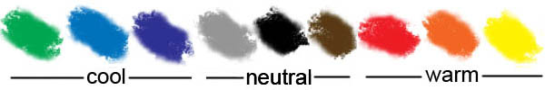
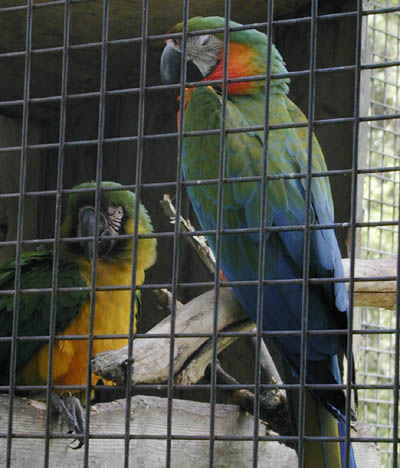
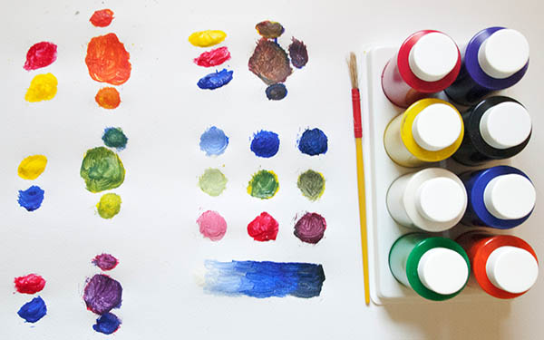
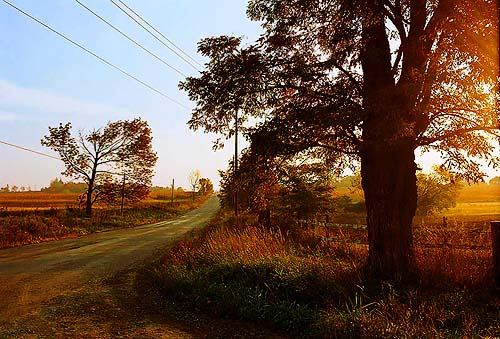
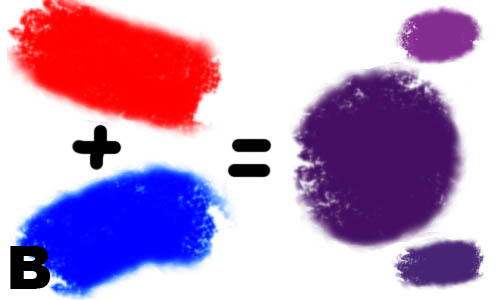
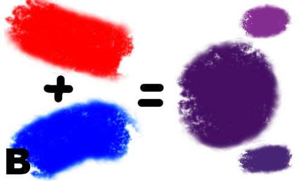

|
Colour 101Part 1: Seeing in ColourVersion 2.0, © 2006, 2009 by Dale Cotton, all rights reservedI sometimes crankily feel that colour is too precious a commodity to be entrusted to photographers. After all, photographers got along without it for a hundred years. Greyscale (AKA black and white) has a nice limited pallet and therefore has that much less to go wrong. If a photographer wants to graduate from greyscale to full colour she should be required to pass a colour "driving" test (orange and chartreuse go together when?). But enough grouching... It's all in your head
The most fundamental thing we need to understand about colour is that it doesn't exist. Fig. 1 shows a "false colour" weather radar map in which pure colours are used to code for temperature. The interesting thing about this is that all colour is false colour – the world out there is "really" greyscale. Physics has shown that red light is electromagnetic radiation at wavelengths around 470 nanometers; blue light at 770 nanometers, etc. Striking the retina, these photons trigger the transmission of nerve impulses (which still have no colour), which in turn sparks further neural activity in the brain. In other words, the sensation of redness or blueness is something that happens inside your head – and for precisely the same reason as the false colours in a weather map – to help us analyze incoming data in real time. If I can see a lion as being dramatically distinct from the the grass she is lurking in, I am more liable to survive than if I have to think "hmmm ... some 550 nanometer photons incoming over there amidst a cluster of 680 nanometer photons ... I wonder what that's all about?". You're getting warmer Ma Nature has had millions of years to fine-tune the false colour mapping used by our nervous systems. In general there are three broad classes of colours: the cool colours – shades of blue and green; the warm colours – shades of yellow and red; and the neutral colours – shades of white/grey/black. Cool colours are cool because they code for the primarily passive elements of our environment: vegetation and sky. Warm colours are attractive because they code for the primarily active elements of our enviroment ("you're getting warmer"), such as mammilian flesh, blood, and fur. Obviously, there is no law of nature preventing vegetation from donning warm colours (think flowers) or animals from donning cool colours (blue macaws), but the fact that we are alive here today to think about this stuff tells us that the warm/cool/neutral false colour system worked at least marginally more often than it failed.  Colour property 1: hue
Hue is what we normally think of when we use the word colour: red, blue, orange, yellow, etc. are all hues. Anyone with a typical public school education undoubtedly had at least one art lesson on mixing colours, but few of us remember the specifics. Do yourself a favour: buy five bottles of poster paints (often called tempera) of the sort used in children's art projects, a few sheets of fairly heavy white paper, and any sort of paintbrush maybe 1/2" in diameter. The five bottles need to be yellow, red, blue, black, and white. If you can't find black, use a bit of black ink or even shoe polish. If you can't find white, apply the paint more thinly where white is needed to let the white of the paper show through. (You have to use poster/tempera paints for this; watercolours, oils, crayons, chalk, coloured pencils, etc. won't work. Plus, poster paints are water-soluble and easy to clean up after.) If you mix white and black together (use a fraction the amount of black compared to white) you get some shade of grey. If you mix yellow and red together you get some shade of orange. If you mix red and blue together you get some shade of purple. If you mix yellow and blue together you get some shade of green. In the following illustrations you see typical results: Simple experiment 1: As well as the paints, you will need a container of water and a cloth or paper towel to clean and dry the brush before each dip into a paint bottle of a different colour. Shake before opening each blottle the first time. You'll soon discover that the darker the colour the stronger it is; so you'll need much less blue and black to get the same effect as white, yellow, and red. You can mix colours right on the paper as I did, or in a separate bowl then apply to the paper.
 Red, yellow, blue are primary hues (try mixing any combination of other colours to get red, yellow, or blue); green, purple, orange are secondary; brown is a tertiary hue. To the right of the equal sign in each image the big blotch is the pure secondary colour; the smaller blotches to the top and bottom are what result when you add too much of one primary or another. Looking at Fig. 5c for example, if the mix of red and yellow is unbalanced toward red you get a shade of reddish orange; if unbalanced toward yellow you get a yellowing orange. Except for sky blue and chlorophyll green, the primary and secondary hues are rare in nature (which is likely why we delight in gem stones and flowers). Nearly all hues we see in the real world are technically tertiaries; to reproduce them by mixing paints we need some combination of red, blue, and yellow. Colour property 2: saturation
Another colour axis is saturation or vividness. The primary, or saturated, hues are attention-getters. If you want that attractive member of the opposite sex to notice your existence, adorn yourself with pure, bright colours like the macaws in Fig. 3. If you're trying to hide from the neighbourhood lion, do just the opposite. For photographers that translates into Technicolor, Velvia, and Fuji digital cameras. If you want someone to notice your photograph in a sea of other photographs, saturated, crayon box colours are a good place to start (or is there now so much competition in this area that subdued colours will stand out in comparison?). If you want someone to not only notice but be attracted to your pictures, think warm saturated colours – pure red, orange, and yellow. The problem with saturation is that subtlety and saturation are enemies. The more you saturate a hue the more shades of that hue you wipe out in the process. There are only five fully saturated hues: the colours in the five poster paint jars. Colour property 3: luminance
Going back to poster paints, if you add white paint to any hue you've created, you create a new lighter or pastel hue. If you add black paint (a little goes a long way) you create a new darker hue. So the final colour axis is brightness or luminance. More photons = more brightness. What matters here, though, is contrast. A dark object on a light surround stands out; so does a bright object on a dark surround . All together nowI wrote above that nearly all hues we see in the real world are technically tertiaries. In fact, we need a new term: pentiaries or some such, because to reproduce them by mixing paints we need some combination of red, blue, yellow but also black and white. When we do that there are literally millions of different colours that the human eye can distinguish.
Juicing up your pictures with saturation and contrast (exaggerating brightnesses) may get you to first base in terms of attracting the viewer's eye. What it doesn't do is keep the viewer from looking away again just as quickly in response to the gag reflex kicking in. For that you need pleasing colour, which is another thing entirely. While saturated, contrasty colours can be arranged in a pleasing fashion, as mentioned above a serious problem is that the more saturated and contrasty your colours are the smaller your palette is. The smaller your palette, the more your pictures resemble other saturated, contrasty pictures – seen one, seen them all.  To make Fig. 10 I started with the JPEG for Fig. 9, then cranked up both saturation and contrast as far as I could stand. In the same way that children will prefer candy over cordon bleu, there's no denying Fig. 10 grabs our attention and perhaps gives a greater initial kick of pleasure to the eye. Staying power is another question... This is a thread we'll pick up again in more detail in Part 3. Further reading
|


 
